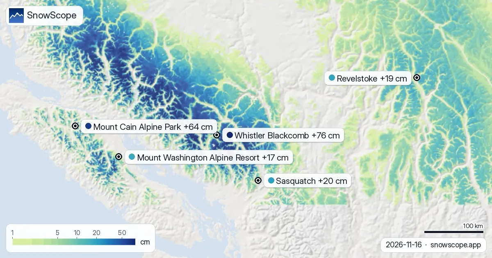

Ouest canadien : Où sont tombés 76 cm de neige fraîche ?
Où la neige fraîche est-elle tombée dans l'Ouest canadien au cours des dernières 72 heures, et d'autres chutes sont-elles à venir ? Whistler Blackcomb a reçu 76 cm de neige fraîche significative au cours des trois derniers jours, et Mount Cain Alpine Park a également vu 64 cm. Cependant, nos modèles prévoient peu de nouvelles chutes de neige dans les jours à venir pour ces régions.
Consultez les prévisions neige en temps réel pour Whistler Blackcomb sur l'application SnowScopeHauteurs de neige, alertes poudreuse et carte 3D, gratuitement.
Faits saillants des récentes chutes de neige
Au cours des dernières 72 heures, Whistler Blackcomb a enregistré 76 cm de neige fraîche sur ses pistes supérieures. Mount Cain Alpine Park a également bénéficié d'un bon rafraîchissement avec 64 cm de neige fraîche. Mount Washington Alpine Resort et Revelstoke ont vu respectivement 17 cm et 19 cm au cours de la même période.
Notre modèle de neige, mis à jour le 16 novembre 2026, montre que la zone enneigée dans l'Ouest canadien a augmenté. La région compte désormais 270 420 kilomètres carrés couverts de neige, contre 260 410 kilomètres carrés il y a deux jours. Cela signifie que 43 des 57 stations de la région ont actuellement de la neige.
| Station | Hauteur de neige | Neige fraîche, 72 h | Attendu, jours suivants | Sommet |
|---|---|---|---|---|
| Whistler Blackcomb | 139 cm | 76 cm | 0 cm | 2 259 m |
| Mount Cain Alpine Park | 91 cm | 64 cm | 0 cm | 1 616 m |
| Revelstoke | 45 cm | 19 cm | 1 cm | 2 224 m |
| Mount Washington Alpine Resort | 111 cm | 17 cm | 1 cm | 1 569 m |

Profondeurs de neige actuelles et niveaux d'isotherme zéro
À Whistler Blackcomb, les pistes supérieures ont une profondeur mesurée de 139 cm. La profondeur de neige modélisée à mi-montagne (1 456 m) est de 49 cm, tandis que la base (653 m) affiche 0 cm. Le niveau d'isotherme zéro à Whistler Blackcomb devrait se situer entre 660 m et 1 360 m aujourd'hui, le 16 novembre 2026, pour descendre à 150 m d'ici le 18 novembre.
Mount Cain Alpine Park signale 91 cm sur ses pistes supérieures. La profondeur modélisée à mi-montagne (1 403 m) est de 27 cm, et de 8 cm à la base (1 190 m). Le niveau d'isotherme zéro y sera entre 880 m et 1 090 m aujourd'hui, pour monter à 1 880 m d'ici le 18 novembre.
Perspectives : Prévisions pour les prochains jours
Malheureusement, les prévisions pour les prochains jours indiquent très peu de neige fraîche pour Whistler Blackcomb et Mount Cain Alpine Park. Les deux stations devraient recevoir 0 cm de neige fraîche d'ici le 19 novembre 2026. Revelstoke et Mount Washington Alpine Resort pourraient voir une petite quantité, environ 1 cm, dans les jours à venir.
La zone enneigée globale dans l'Ouest canadien devrait augmenter pour atteindre 310 150 kilomètres carrés d'ici le 19 novembre, avec 45 stations qui devraient avoir de la neige. Cela suggère que si la récente tempête a été importante, l'avenir immédiat semble plus sec pour les principales stations.
Comparaison avec les hivers passés
À Whistler Blackcomb, la profondeur de neige modélisée à 1 456 m est de 36 cm. C'est plus profond que seulement 1 des 46 derniers hivers à cette date, et en dessous des 103 cm habituels pour la mi-novembre. Cela suggère que si les récentes chutes de neige ont été bonnes, la base de neige globale est encore en développement par rapport aux moyennes historiques.
En revanche, Mount Cain Alpine Park affiche une profondeur de neige modélisée de 37 cm à 1 403 m. C'est plus profond que 27 des 46 derniers hivers à cette date, et au-dessus des 30 cm habituels pour cette période de l'année. Cela indique un début de saison plus fort pour Mount Cain Alpine Park par rapport à son historique.
Conseils aux skieurs
- Pour les meilleures conditions de neige, concentrez-vous sur les pistes supérieures de Whistler Blackcomb où 139 cm sont mesurés, ou Mount Cain Alpine Park avec 91 cm, compte tenu des récentes chutes de neige.
- Soyez conscient des niveaux d'isotherme zéro variables. À Whistler Blackcomb, le niveau d'isotherme zéro sera entre 660 m et 1 360 m aujourd'hui, ce qui signifie que les altitudes plus basses pourraient connaître de la pluie ou de la neige mouillée.
- La neige de début de saison peut être mince, surtout aux altitudes inférieures. Soyez prudent face aux obstacles non balisés ou aux rochers sous la neige.
- Consultez toujours le bulletin d'avalanche officiel si vous prévoyez de faire du hors-piste, car les conditions peuvent changer rapidement avec la nouvelle neige.
- Bien que les stations gagnent de la neige, vérifiez toujours le site web officiel de la station pour connaître l'état d'ouverture et les informations spécifiques sur les remontées mécaniques avant de partir.
À propos de ces chiffres
Les hauteurs de neige des stations sont la neige la plus épaisse sur le haut du domaine, d'après le modèle de neige SnowScope (environ 1 km, calcul du 16 novembre) ; ce sont des estimations pour une zone, pas une mesure en un point. Les valeurs des stations de mesure sont mesurées à la date indiquée. Les prévisions peuvent changer. Consultez toujours le bulletin d'avalanche officiel avant le hors-piste.
Bulletins d'avalanche officiels: Avalanche Canada
Citer ce bulletin
Pour la recherche, l'enseignement ou la presse : chiffres et graphiques réutilisables librement sous CC BY 4.0 avec cette citation.
SnowScope (2026), Ouest canadien : Où sont tombés 76 cm de neige fraîche ?, https://snowscope.app/blog/fr/2026/11/western-canada-whistler-blackcomb-fresh-snow-powder-alert-16-november-2026.html, consulté le 2026-11-16
SnowScope (Atlas Labs). (2026, November 16). Ouest canadien : Où sont tombés 76 cm de neige fraîche ?. SnowScope snow reports. https://snowscope.app/blog/fr/2026/11/western-canada-whistler-blackcomb-fresh-snow-powder-alert-16-november-2026.html
BibTeX
@misc{snowscope2026westerncanadawhistlerbla,
author = {{SnowScope (Atlas Labs)}},
title = {Ouest canadien : Où sont tombés 76 cm de neige fraîche ?},
year = {2026},
month = nov,
howpublished = {\url{https://snowscope.app/blog/fr/2026/11/western-canada-whistler-blackcomb-fresh-snow-powder-alert-16-november-2026.html}},
note = {Published 2026-11-17 06:57 UTC; accessed 2026-11-16}
}· CC BY 4.0 · Méthodes, données et outils →
Whistler Blackcomb : neige et température selon l'altitude, cet hiver vs l'hiver dernier (outils) →
Suivre Whistler Blackcomb
Gratuit : un message quand la neige arrive, et la météo chaque matin.
Autres bulletins neige

Whistler Blackcomb a reçu 75 cm de neige nouvelle au sommet en une semaine, puis une tempête douce avec 124 mm d'eau. Un guide simple sur la sous-couche, la neige fraîche, la pluie et la croûte.

Mount Washington retient 145 cm le 8 novembre, le plus profond de l'Ouest canadien, mais le niveau de congélation montera au-dessus du sommet d'ici le 11 novembre.